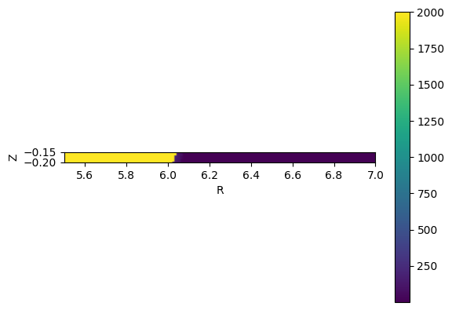

import fusionsc as fsc
from fusionsc.devices import w7x
import numpy as np
geo = w7x.op21Geometry().index(w7x.defaultGeometryGrid())
field = w7x.standard().compute(w7x.defaultGrid())
#mapping = w7x.computeMapping(field, toroidalSymmetry = 5).mapGeometry(geo.triangulate(0.02))
phi = np.radians(200.8)
startR = np.linspace(5.5, 7, 150)
startZ = np.linspace(-0.2, -0.15, 50)
startR, startZ = np.meshgrid(startR, startZ, indexing = "ij")
x = startR * np.cos(phi)
y = startR * np.sin(phi)
z = startZ
traceResult = fsc.flt.trace(
[x, y, z],
field,
geometry = geo,
#mapping = mapping, stepSize = 13,
minStepSize = 0.001, maxStepSize = 0.1,
targetError = 1e-3,
collisionLimit = 1, distanceLimit = 2e3,
direction = "cw" # Possible values: ccw, cw, forward (field direction), backward (against field direction)
)
import matplotlib.pyplot as plt
# This array has the same shape as the XYZ array you put in
# as points
# You can put in arrays of whatever dimensionality you want
# except that on input the first dimension has to be 3 (X, Y, Z)
# and on output you get the dimensions X, Y, Z, connection length
x, y, z, conLen = traceResult["endPoints"]
plt.imshow(conLen.T, origin = "lower", extent = [startR.min(), startR.max(), startZ.min(), startZ.max()])
plt.colorbar()
plt.xlabel("R")
plt.ylabel("Z")
Text(0, 0.5, 'Z')

import pyvista as pv
# Filter field lines by whether they stopped due to hitting a geometry
mask = traceResult["stopReasons"] == "collisionLimit"
xMasked = x[mask]
yMasked = y[mask]
zMasked = z[mask]
pl = pv.Plotter()
pl.add_points(np.asarray([xMasked, yMasked, zMasked]).reshape([3, -1]).T)
pl.show()
C:\Users\Knieps\AppData\Local\Python\pythoncore-3.13-64\Lib\site-packages\pyvista\jupyter\notebook.py:36: UserWarning: Failed to use notebook backend:
No module named 'trame'
Falling back to a static output.
warnings.warn(